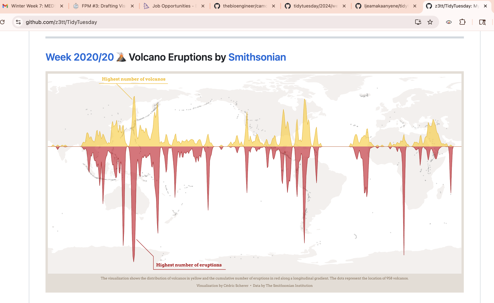
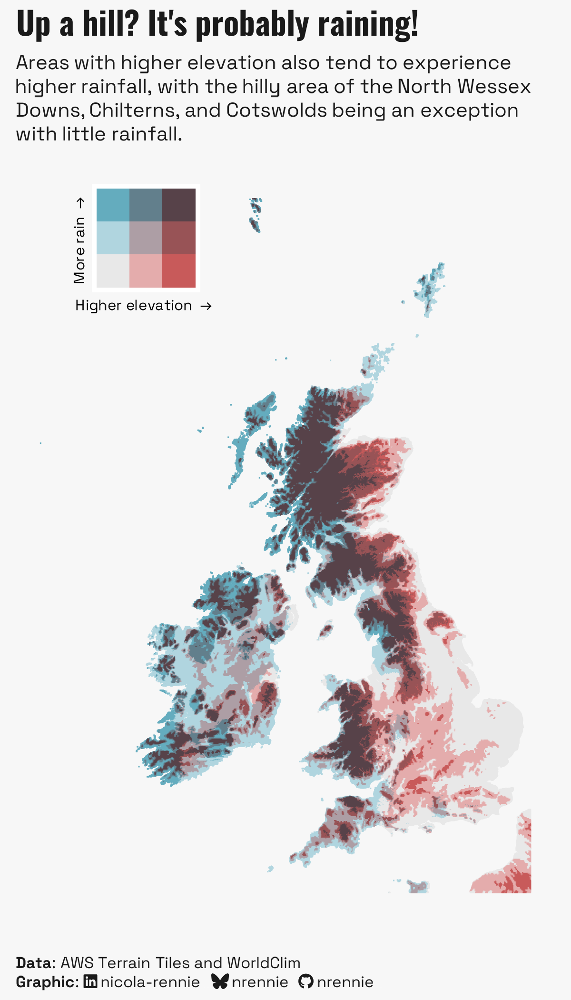
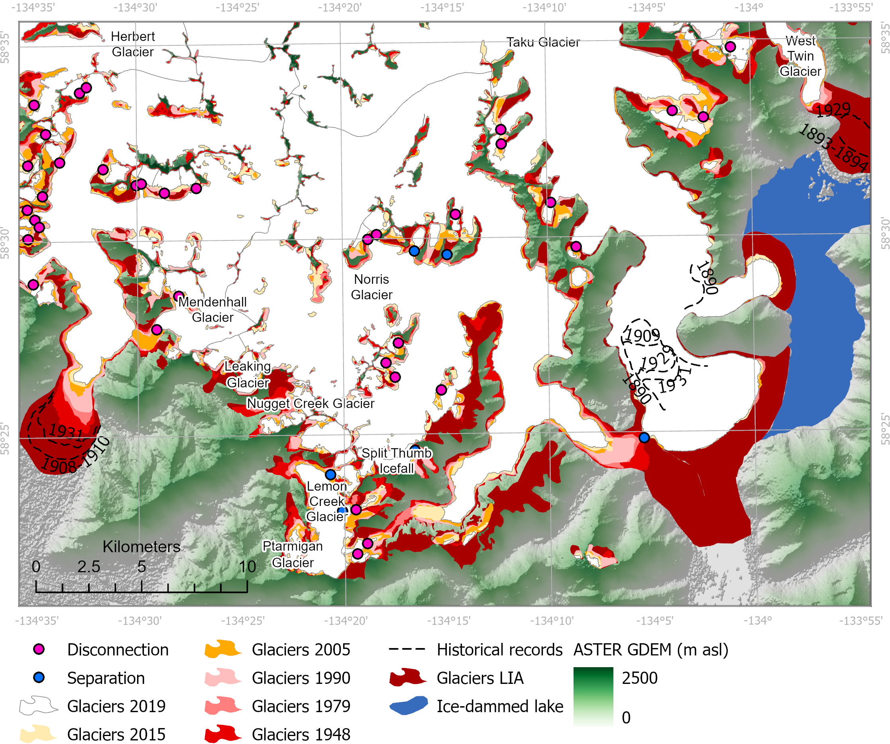
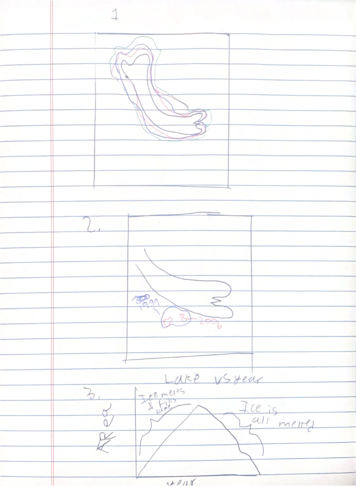
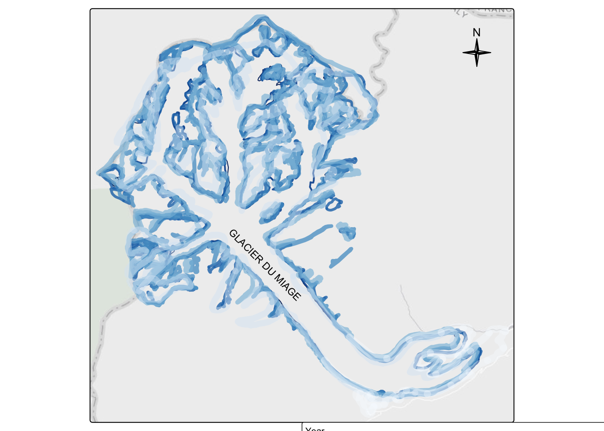
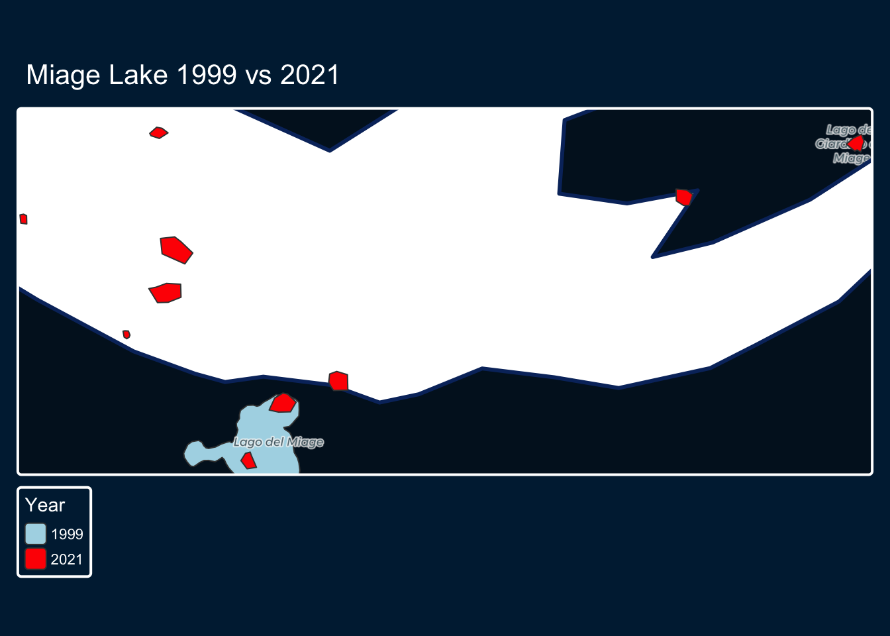
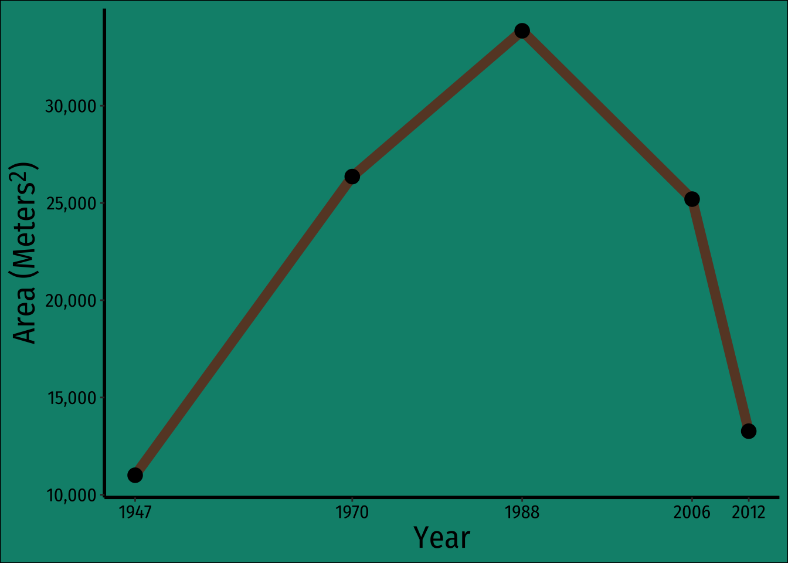

pacman::p_load('tidyverse',
'here',
'ggthemes',
'janitor',
'terra',
'tmap',
'patchwork',
'stars',
'rnaturalearth',
'showtext')Final Project Milestone 3
I Question statement
Can glacier decline be see in changing glacier lakes?
Can glacier decline be plotted for the miage glacier?
Can glacier lake fragmentation be seen?
Can changes in glacier area be seen over time?
These questions have slightly changed as I have definitely zoomed in my analysis.
II Data
I have three datasets. The first includes the shapefile of the glaciers in the region, which is the most current projection of the glacier I could find. The next includes glacier lake areas over ~70 years. It comes as a dataset for certain years, which I then join. The last dataset includes multilines for the glaciers between 1820 and 2005 as well as the glacier lakes in 2021 and 2005, so I can compare.
III Inspiration Visuals
I am looking for different ways of presenting the recession so I found some visuals to help with those ideas.



IV Hand Drawing


V Recreate hand drawing
Load packages
Read data
Lakes
lake_30 <- read_delim(here('data','VianiC_2018',
'datasets', '1930s_glaciallakes.tab')) %>%
clean_names()Rows: 43 Columns: 8
── Column specification ────────────────────────────────────────────────────────
Delimiter: "\t"
chr (2): Event, Mountain gr
dbl (6): Station, Date/Time, Latitude, Longitude, Area [m**2], Perimeter [m]
ℹ Use `spec()` to retrieve the full column specification for this data.
ℹ Specify the column types or set `show_col_types = FALSE` to quiet this message.lake_70 <- read_delim(here('data','VianiC_2018',
'datasets', '1970s_glaciallakes.tab'))%>%
clean_names()Rows: 66 Columns: 8
── Column specification ────────────────────────────────────────────────────────
Delimiter: "\t"
chr (2): Event, Mountain gr
dbl (6): Station, Date/Time, Latitude, Longitude, Area [m**2], Perimeter [m]
ℹ Use `spec()` to retrieve the full column specification for this data.
ℹ Specify the column types or set `show_col_types = FALSE` to quiet this message.lake_80 <- read_delim(here('data','VianiC_2018',
'datasets', '1980s_glaciallakes.tab'))%>%
clean_names()Rows: 133 Columns: 8
── Column specification ────────────────────────────────────────────────────────
Delimiter: "\t"
chr (2): Event, Mountain gr
dbl (6): Station, Date/Time, Latitude, Longitude, Area [m**2], Perimeter [m]
ℹ Use `spec()` to retrieve the full column specification for this data.
ℹ Specify the column types or set `show_col_types = FALSE` to quiet this message.lake_90 <- read_delim(here('data','VianiC_2018',
'datasets', '1990s_glaciallakes.tab'))%>%
clean_names()Rows: 178 Columns: 8
── Column specification ────────────────────────────────────────────────────────
Delimiter: "\t"
chr (2): Event, Mountain gr
dbl (6): Station, Date/Time, Latitude, Longitude, Area [m**2], Perimeter [m]
ℹ Use `spec()` to retrieve the full column specification for this data.
ℹ Specify the column types or set `show_col_types = FALSE` to quiet this message.lake_06 <- read_delim(here('data','VianiC_2018',
'datasets', '2006_glaciallakes.tab'))%>%
clean_names()Rows: 214 Columns: 8
── Column specification ────────────────────────────────────────────────────────
Delimiter: "\t"
chr (2): Event, Mountain gr
dbl (6): Station, Date/Time, Latitude, Longitude, Area [m**2], Perimeter [m]
ℹ Use `spec()` to retrieve the full column specification for this data.
ℹ Specify the column types or set `show_col_types = FALSE` to quiet this message.lake_12 <- read_delim(here('data','VianiC_2018',
'datasets', '2012_glaciallakes.tab'))%>%
clean_names()Rows: 186 Columns: 8
── Column specification ────────────────────────────────────────────────────────
Delimiter: "\t"
chr (2): Event, Mountain gr
dbl (6): Station, Date/Time, Latitude, Longitude, Area [m**2], Perimeter [m]
ℹ Use `spec()` to retrieve the full column specification for this data.
ℹ Specify the column types or set `show_col_types = FALSE` to quiet this message.lake_joined <- bind_rows(list(lake_30, lake_70, lake_80,
lake_06, lake_12))%>%
separate(event, into = c("lake", NA), sep = "_")%>%
filter(lake == 'Miage')Warning: Expected 2 pieces. Additional pieces discarded in 292 rows [1, 2, 4, 5, 6, 7,
8, 9, 12, 14, 19, 20, 28, 31, 32, 36, 37, 38, 39, 40, ...].Aosta Portal
glacier_areas <- st_read(here::here('data',
'u1412_02-19-2026_20-16-06',
'ghiacciai_aree',
'ghiacciai_aree.shp'))Reading layer `ghiacciai_aree' from data source
`/Users/petervitale/Desktop/MEDS/EDS-240/eds240-infographic/data/u1412_02-19-2026_20-16-06/ghiacciai_aree/ghiacciai_aree.shp'
using driver `ESRI Shapefile'
Simple feature collection with 1048 features and 27 fields
Geometry type: MULTIPOLYGON
Dimension: XY
Bounding box: xmin: 329271.7 ymin: 5036772 xmax: 412397 ymax: 5093812
Projected CRS: ED50 / UTM zone 32Nmiage_glacier <- glacier_areas %>%
filter(nome == 'GLACIER DU MIAGE')
miage_label <- miage_glacier[1,]
glacier_lakes <- st_read(here::here('data',
'u1412_02-19-2026_20-16-06',
'ghiacciai_laghi_epiglaciali',
'ghiacciai_laghi_epiglaciali.shp'))Reading layer `ghiacciai_laghi_epiglaciali' from data source
`/Users/petervitale/Desktop/MEDS/EDS-240/eds240-infographic/data/u1412_02-19-2026_20-16-06/ghiacciai_laghi_epiglaciali/ghiacciai_laghi_epiglaciali.shp'
using driver `ESRI Shapefile'
Simple feature collection with 121 features and 21 fields
Geometry type: POLYGON
Dimension: XY
Bounding box: xmin: 330195.2 ymin: 5038214 xmax: 411814 ymax: 5091451
Projected CRS: ED50 / UTM zone 32Nmiage <- glacier_lakes %>%
filter(grepl("Miage", nome_lago)) %>%
mutate(anno_rilie = as.integer(as.character(anno_rilie)))
glacier_lakes_2021 <- st_read(here::here('data',
'u1412_02-19-2026_20-16-06',
'ghiacciai_laghi_epiglaciali_2021',
'ghiacciai_laghi_epiglaciali_2021.shp'))Reading layer `ghiacciai_laghi_epiglaciali_2021' from data source
`/Users/petervitale/Desktop/MEDS/EDS-240/eds240-infographic/data/u1412_02-19-2026_20-16-06/ghiacciai_laghi_epiglaciali_2021/ghiacciai_laghi_epiglaciali_2021.shp'
using driver `ESRI Shapefile'
Simple feature collection with 157 features and 3 fields
Geometry type: POLYGON
Dimension: XY
Bounding box: xmin: 330119.8 ymin: 5038144 xmax: 404264.6 ymax: 5092978
Projected CRS: ED50 / UTM zone 32Nmiage_2021 <- glacier_lakes_2021 %>%
filter(grepl("MIAGE", nome)) %>%
mutate(anno_rilie = 2021)
glacier_permimeter <- st_read(here::here('data',
'u1412_02-19-2026_20-16-06',
'ghiacciai_perimetri',
'ghiacciai_perimetri.shp'))Reading layer `ghiacciai_perimetri' from data source
`/Users/petervitale/Desktop/MEDS/EDS-240/eds240-infographic/data/u1412_02-19-2026_20-16-06/ghiacciai_perimetri/ghiacciai_perimetri.shp'
using driver `ESRI Shapefile'
Simple feature collection with 3148 features and 25 fields
Geometry type: MULTILINESTRING
Dimension: XY
Bounding box: xmin: 329120.3 ymin: 5036381 xmax: 412914 ymax: 5094780
Projected CRS: ED50 / UTM zone 32Nmiage_perimeter <- glacier_permimeter %>%
filter(grepl("MIAGE", nome_gs)) %>%
mutate(anno = as.character(anno))Plots
1: Plot of whole glacier area
miage_perimeter_adj <- miage_perimeter %>%
filter(anno %in% c(1820, 1920, 2005))
tm_basemap() +
tm_tiles(c(CartoDB = "CartoDB.PositronOnlyLabels")) +
tm_shape(miage_perimeter) +
tm_lines(
col = 'anno',
col.scale = tm_scale_ordinal(values = 'blues'),
col.legend = tm_legend(
title = 'Year',
labels.format = list(big.mark = ''),
orientation = 'landscape',
position = c(.5, 0)
),
col_alpha = 'anno',
col_alpha.scale = tm_scale_ordinal(values = seq(.4, 1, length.out = 8)),
lwd = 'anno',
lwd.scale = tm_scale_ordinal(values = seq(8, 1, length.out = 8)),# adjust 8 to number of years
lwd.legend = tm_legend(show = FALSE),
col_alpha.legend = tm_legend(show = FALSE)
) +
tm_shape(miage_label) +
tm_text(
text = 'nome', col = 'black',
xmod = -.7, ymod = -3.2, angle = -45, size = .7
) +
tm_compass(type = "4star", size = 2, position = c("right", "top"))Multiple palettes called "blues" found: "brewer.blues", "matplotlib.blues". The first one, "brewer.blues", is returned.[plot mode] fit legend/component: Some legend items or map compoments do not
fit well, and are therefore rescaled.
ℹ Set the tmap option `component.autoscale = FALSE` to disable rescaling.
2: Plot of miage lake
miage <- miage %>%
filter(anno_rilie == '1999')
miage_2021 <- miage_2021 %>%
filter(!nome %in% c('MIAGE I',
'MIAGE II',
'MIAGE III',
'MIAGE IV',
'MIAGE V'))
tm_shape(miage_2021)+
tm_layout(bg.color = '#021526',
outer.bg.color = '#002340', # This is essentially cobolt style but works with the legend I add
frame.color = 'white',
frame.lwd = 2)+
tm_shape(miage) + # Add lake in 2006 and 1999
tm_polygons(fill = 'anno_rilie',
fill.scale = tm_scale_categorical(values = c('lightblue', 'lightblue')),
fill.legend = tm_legend(show = FALSE))+
tm_tiles(c(CartoDB = "CartoDB.PositronOnlyLabels"))+
tm_shape(miage_glacier)+ # Add the glacier
tm_polygons(fill = 'white',
col = '#08316B',
lwd = 3)+
tm_title(text = 'Miage Lake 1999 vs 2021',
color = 'white')+
tm_shape(miage_2021)+ # add 2021 lake
tm_polygons(fill = 'anno_rilie',
fill.scale = tm_scale_categorical(
values = 'red'),
fill.legend = tm_legend(show = FALSE))+
# Add a legend so we can include the 2 different sets
tm_add_legend(type = 'polygons',
labels = c('1999', '2021'),
fill = c('lightblue', 'red'),
bg.color = "#002340",
text.color = 'white',
title.color = 'white',
frame.color = 'white',
frame.lwd = 2,
title = 'Year')
3: Plot of miage area over time
# Add fonts
font_add_google(name = 'Quicksand', # Quicksand for title
family = 'quicksand')
font_add_google(name = 'Fira Sans Condensed', # Fire sans for non-title
family = 'fira_sans_condensed')
# Grab years for x-axis
years <- lake_joined %>%
filter(grepl("Miage", lake)) %>%
pull(date_time) %>%
unique()
miage_area <- lake_joined %>%
filter(grepl("Miage", lake)) %>%
group_by(date_time) %>%
summarize(total_area = (sum(area_m_2, na.rm = TRUE))) %>%
ggplot(aes(x = date_time, y = total_area)) +
geom_line(color = '#68452E',
lwd = 3)+
geom_point(size = 4)+
scale_x_continuous(breaks = years)+
scale_y_continuous(labels = scales::comma)+
labs(
x = 'Year',
y = 'Area (Meters<sup>2</sup>)'
)+
theme_tufte()+
theme(
plot.background = element_rect(fill = '#048F7A'), # Cobalt
axis.title = ggtext::element_markdown(color = 'black',
family = 'fira_sans_condensed',
size = 20),
axis.title.y = ggtext::element_markdown(),
axis.text = element_text(color = 'black',
family = 'fira_sans_condensed',
size = 12),
plot.title = element_text(color = 'black',
family = 'quicksand'),
axis.line = element_line(color = "black", size = 1)
)Warning: The `size` argument of `element_line()` is deprecated as of ggplot2 3.4.0.
ℹ Please use the `linewidth` argument instead.showtext.auto(enable = TRUE)'showtext.auto()' is now renamed to 'showtext_auto()'
The old version still works, but consider using the new function in future codemiage_area
ggsave(filename = 'AREA.pdf', width = 1500,
height = 1000, units = 'px')
showtext.auto(enable = FALSE)VI. Answer a few last questions about your work and progress
- What are the key insights you want your infographic to communicate, and how will your design choices help highlight and support those messages?
I want 3 things to be clear:
Glacier is receding: I think this is clear but I might look in other ways of showing it to make it clearer
Glacier lake is fragmenting: This is the most clear as the red lakes are hard to miss, and show that as the glacier melts new lakes form
Glacier lake area is quickly reducing: Very clear from the plot
- What challenges did you encounter or anticipate encountering as you continue to build / iterate on your visualizations in R? If you struggled with mocking up any of your three visualizations, describe those challenges here.
I struggled most with actually getting my data. Once I had it I had to pray it had what I needed and it did! I was most worried about the glacier recession plot, and I still am struggling to know if the aesthetics are clear.
- What ggplot extension tools / packages do you need to use to build your visualizations? Are there any that we haven’t covered in class that you’ll be learning how to use for your visualizations?
I currently am using tmap heavily. I may want to migrate these to ggplot, but I have more experience in tmap. The thing that I am struggling to find is whether I can import google fonts for the tmap plots as well.
- What feedback do you need from the instructional team and / or your peers to ensure that your intended message and key insights are clear?
I would like to know if it is visible that there has been glacier recession in my first plot. I also noticed that if I plot perimeters instead of areas in the third plot I get an increasing line. What could I do to plot these lines on top of eachother to further show fragmentation.